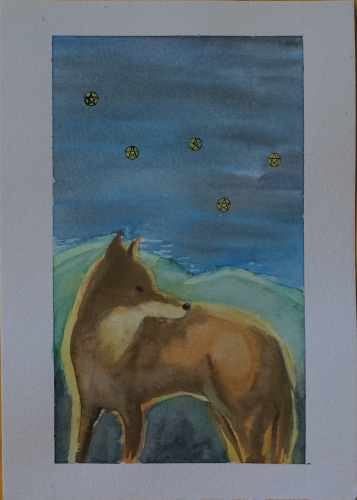
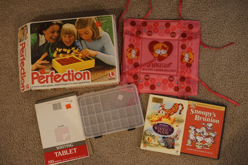

My coworker has been talking about how she loves painting so I told her to keep painting!! It makes me really happy to see people enjoying art. Her kids are away so she doesn't have to worry about another purple acrylic stain on her carpet. This is her chance! I kept bugging her and bugging her. Last week she asked me if I wanted her to paint me anything and we came up with "hedgehog"

Believe it or not, she actually did it!!! She painted me a sweet little hedgehoggie!!! I was shocked and so happy!!!
Now that I was sure I wasn't getting into a one sided art trade, I asked her what she wanted me to paint. She gave me themes like "crystal", "astrology", "wolf", "moon", and "zodiac". None of these are things I would usually draw, but I thought it'd be fun anyway. I asked her if tarot was appropriate too and she was into it. All my tarot knowledge comes from persona btw.
so... here is my painting for her!
I thought I should do "the moon", but honestly that's too easy. So I went with "5 of pentacles"! The usual 5 of pentacles card kinda sucks so I made it better. And I shaped the pentacles as cassiopeia! I don't actually know if cassiopeia has anything to do with astrology though... The art itself is in the same ratio as a tarot card, but it is enlarged a bit.
I think she was happy with it! I'm glad she liked it. It felt weird to receive a canvas and give a sheet of paper though. I didn't really want to use acrylics though. I'm like 99% sure I'm using watercolors wrong but it's all just for fun anyway :3 Maybe Mr. Aubrey will teach me something when I actually sit down and read his book!
I covered myself in sunscreen and headed to the thrift store before Xenoblade 3 comes out tomorrow. It's into the high 90s now so going outside is becoming not very fun anymore. Time to sit inside with the fan blowing on my face for a month.
For Ryan.
I honestly have no idea what this is. Please tell me. Clearly it ties into some sort of box but for what purpose?
Maybe the paper will be smooth enough for praticing with copics
I finished ookami yesterday and added a review of it on my game review page. I came out at 47 hr 12 min over 80 days. I'm not fully sure I enjoyed it 100% but it was cute. Didn't make it into my 3x3.
I'm kinda thinking about my doll regrets. Verona shouldn't be ripped. Not at all. Because I bought Verona in realskin, he's stuck on that body forever. There's no way to find a match. I wish I had looked into volks before buying him. I thought it was strange at the time to see a very young looking SD sized boy. Volks has no shortage of these kinds of boys, yet I didn't give them a glance. They have appropriately wimpy bodies too!
Liam and Verona should not be the same height! Yet, I have them on the same body. I looked into SD13/Gr/17 bodies and SD17 would be the only one taller than Verona. So, SD17 is a limited line! So which dolls would have a body I could use with my WS head? ...
...
Andre Grandier and ROMANTIC GLANCE WILLIAMS are the only PS White releases and both bodies about 10 years newer than his head. Also both insanely expensive! Match: impossible. Not to mention I don't even know if the head is volks matching! I think he's stuck. Not even SDF is taller than oYID. I'd love it if he were a little taller but I can't make him shorter than Verona and I can't change Verona's body.
If I had ordered Verona in WS or NS, this wouldn't have been impossible. I would have just gotten him an SD or SD13 body! Easy peasy. I got sucked into an event and thought I needed my doll to be rare and special. While it's true I've never seen another Louis in realskin other than the promo pics, it's not like he was ever in high demand either.